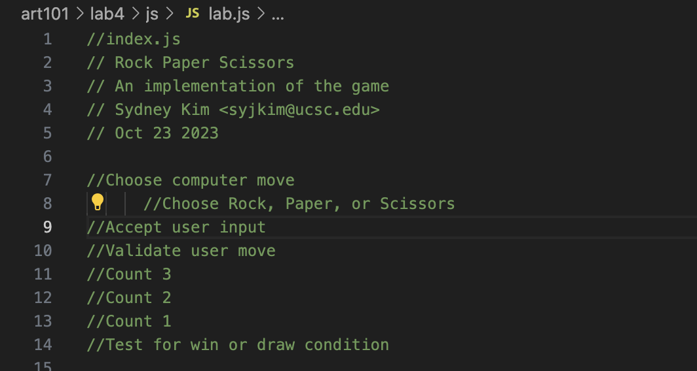

Lab 4 - Pseudocoding and Problem-solving
Challenge
In this lab, we dive into the habit of thinking rather in terms of pseudocoding before the big scary dive into actual coding. For this, me and my partner chose to do Rock Paper Scissors.
Problems
Due to the lab being straightforward and easy to follow thanks to the instructions provided, I didn't run into any obsactles nor problems.
Results
Here, I'll display the results per each step of the lab taken.
Task 1 : pseudocode an everyday task
How to make iced coffee
- Get the coffee grounds
- Put a filter in the coffee pot
- Pour 3 tbsp of coffee into the filter
- Pour 3 cups of water into the water compartment
- Turn on the coffee pot
- Wait for the coffee to brew
- Once coffee is brewed, pour until the cup is 3/4 full
- Let coffee cool for 10 minutes
- Add extras to your coffee , like sugar or cream!
- add ice
- enjoy!
Task 2: Pseudocode a simple computing game
Creating a Tic-Tac-Toe game:
- Rock Paper Scissors
- Choose computer move
- Accept user input
- Validate user move
- Count 3
- Count 2
- Count 1
- Test for win or draw condition
Task 3: Turn pseudocode into comments
//Choose computer move
//Choose Rock, Paper, or Scissors
//Accept user input
//Validate user move
//Count 3
//Count 2
//Count 1
//Test for win or draw condition
Below is a screenshot of the pseudocode in js:
